Dr. B.R. Ambedkar's legacy has been honoured repeatedly through India's postal history, with stamps capturing his role as the architect of the Constitution and a champion of social justice.
From early commemorative issues to definitive series releases, these stamps reflect how the nation continues to remember and celebrate his contributions over the decades. Each stamp tells a story of transformation, from his 75th birth anniversary tribute to modern stamps depicting his places of significance like Chaitya Bhoomi and Deekshabhoomi.
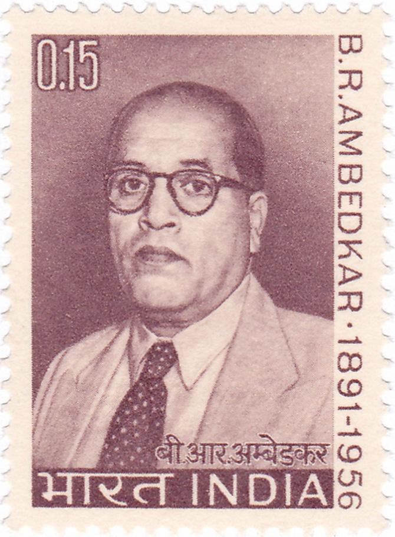
To mark Dr B R Ambedkar's 75th birth anniversary on April 14, 1966, the Posts & Telegraphs Department issued a commemorative stamp in his honour, recognising his immense contribution to India.
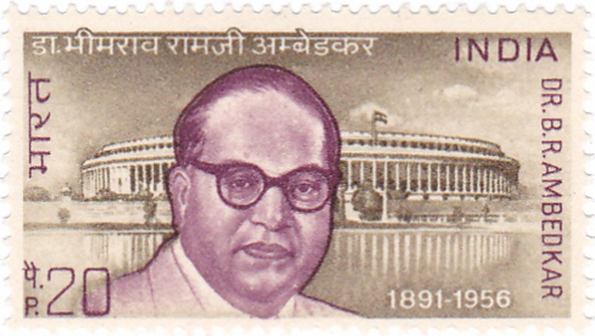
Issued on April 14, 1973, this commemorative stamp marked his 82nd birth anniversary and the 25th year of India's Independence, placing him among the nation's most celebrated leaders.
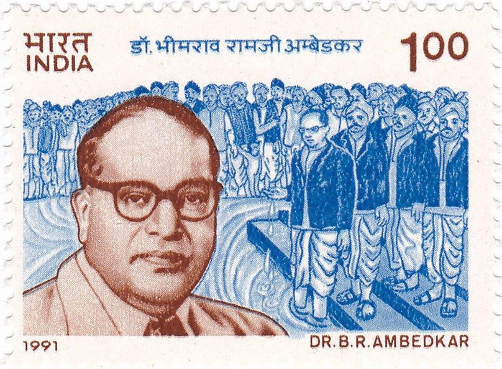
Released on the occasion of Dr Ambedkar's birth centenary, this commemorative stamp pays tribute to his lasting legacy.
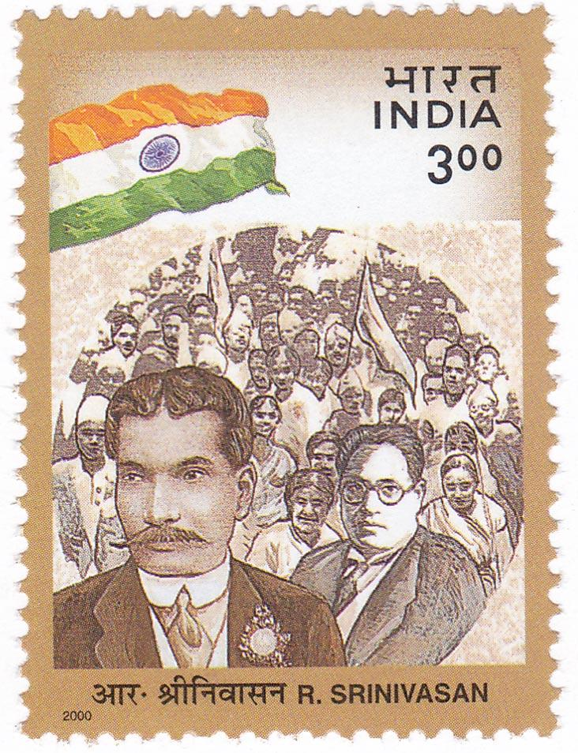
The commemorative postage stamp featuring Rettamalai Srinivasan alongside Dr Ambedkar.
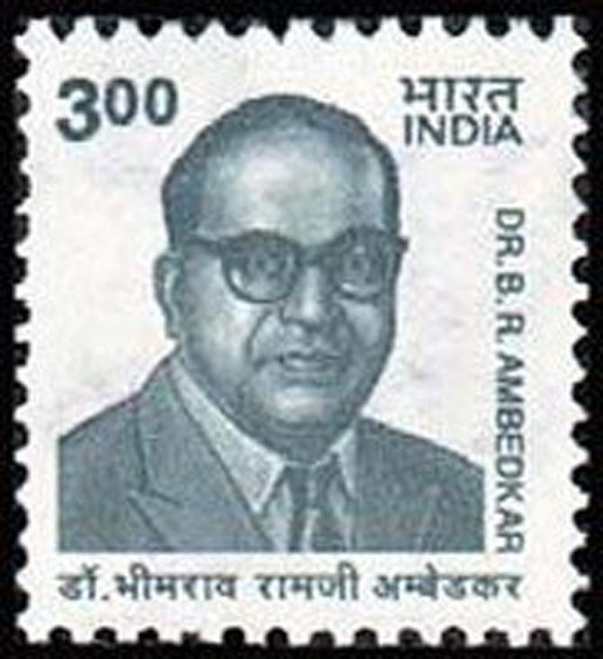
The Department of Posts issued a special definitive stamp on Dr Ambedkar's 110th birth anniversary.
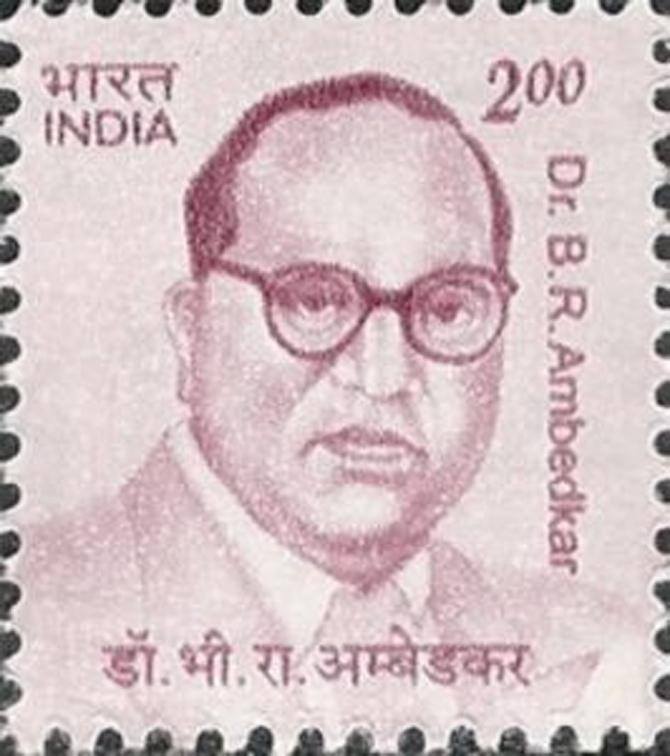
Although issued as part of the 10th Definitive Series, this stamp also belongs to the 2009 personality definitive series.
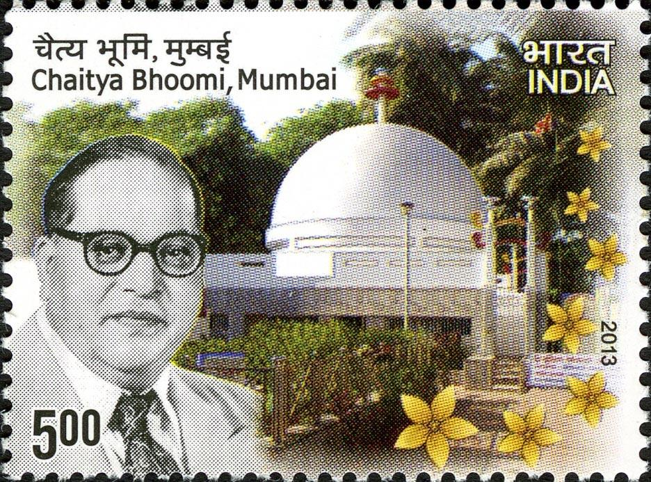
This commemorative stamp depicts the Chaitya Bhoomi memorial in Mumbai, where Dr Ambedkar's last rites were performed.
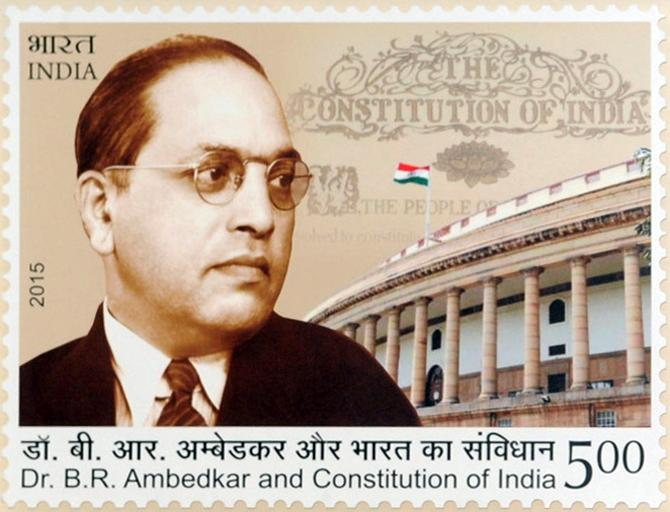
Issued by the Government of India, the stamp links Dr Ambedkar and the Constitution in one frame and was released to mark his 125th birth anniversary.
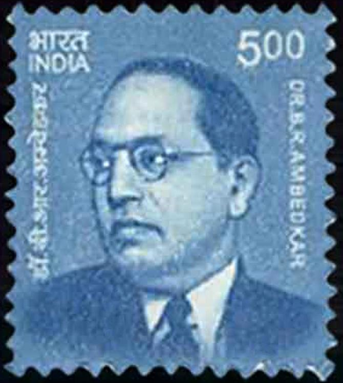
Part of the Makers of India definitive series celebrating nation-builders. Andhra Pradesh Postal Circle issued a Presentation Pack on Dr Ambedkar on his 125th birth anniversary on April 14, 2016 at the Salar Jung Museum, Hyderabad.
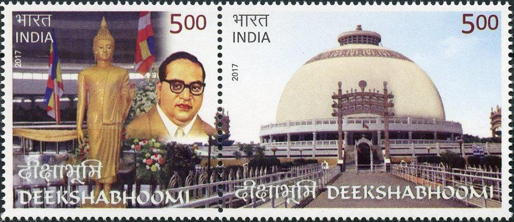
Marking his 126th birth anniversary, Prime Minister Narendra Modi unveiled a commemorative postage stamp depicting Deekshabhoomi, the site of his historic conversion to Buddhism, on October 14, 1956 in Nagpur.
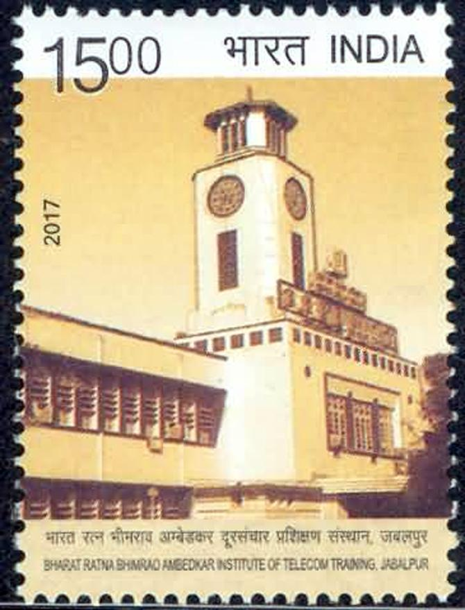
The commemorative postage stamp related to the Bharat Ratna Bhimrao Ambedkar Institute of Telecom Training, Jabalpur, was released to mark the platinum jubilee or 75 years of the establishment of the institute in his name.
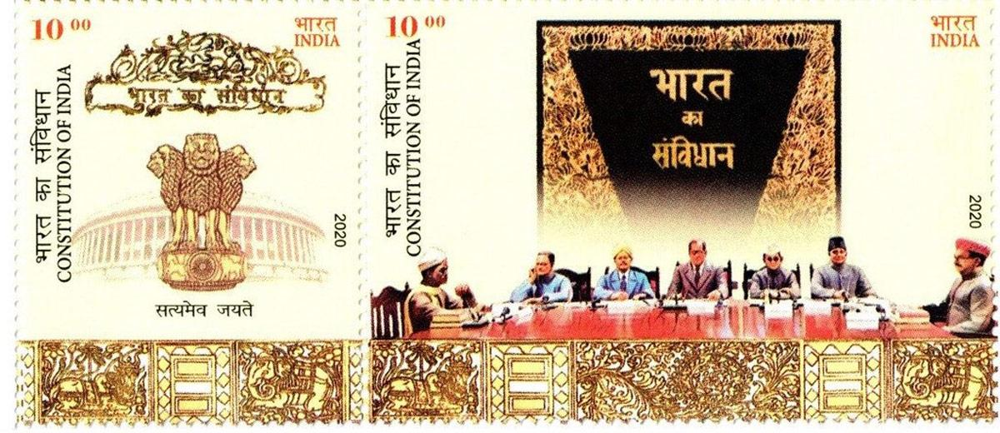
The commemorative stamp honours Dr Ambedkar during his 125th birth anniversary celebrations, depicting him as the Chairman of the Drafting Committee of the Constitution.